Auditory Illusions - Combination tones
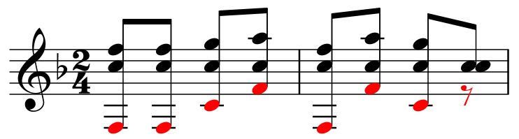
Additional tones can be artificially perceived when two real tones are played together.
Discovered by Tartini.
Combination tones
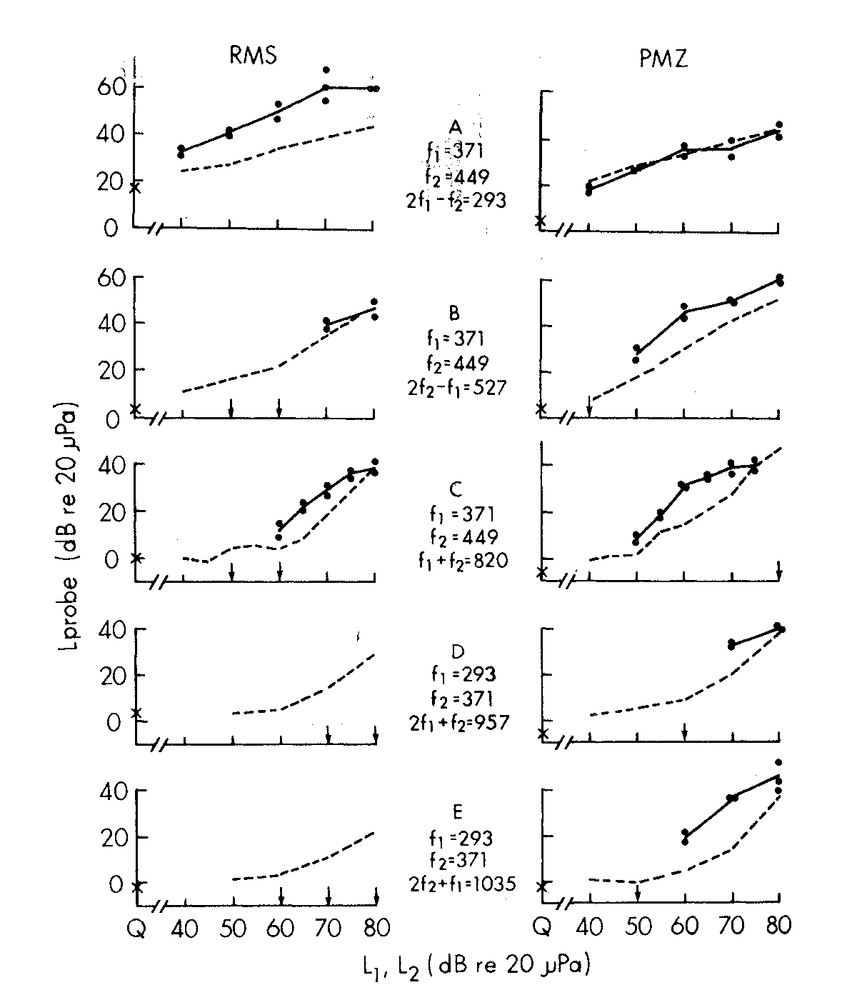
Audible combinations of frequencies greater than the primary tones that generate them.
With primary tones at frequencies $\mathbf{f_1}$ and $\mathbf{f_2}$, combination tones at $\mathbf{f_1+f_2}$, $\mathbf{2f_1-f_2}$ and other frequencies have been demonstrated.
Two tone distortion in the basilar membrane of the cochlea
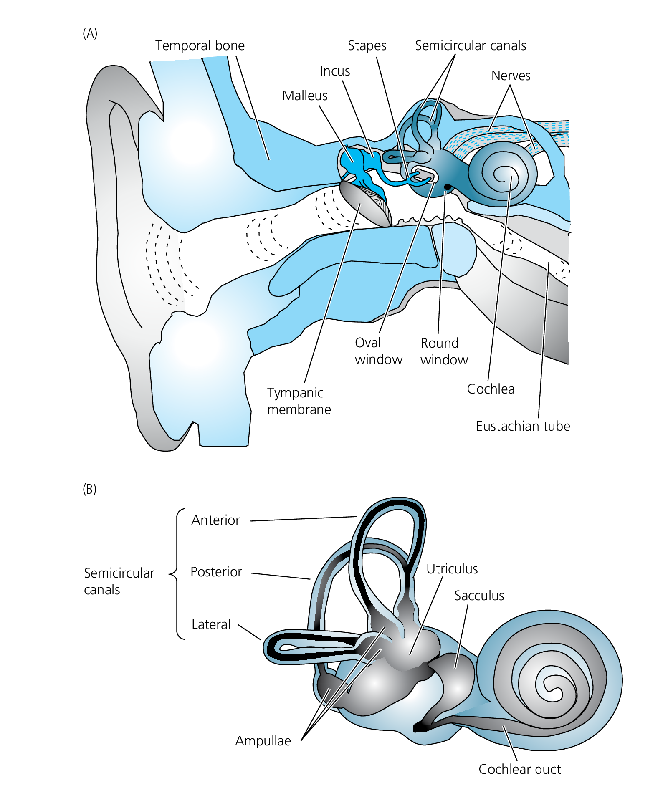
Frequency spectra of basilar membrane responses to two-tone stimuli using laser velocimetry
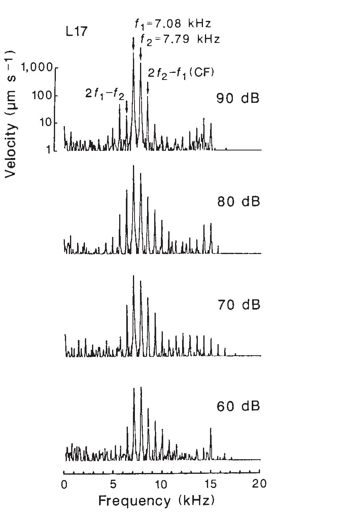
Hair bundle motion opens mechanically sensitive ion channels
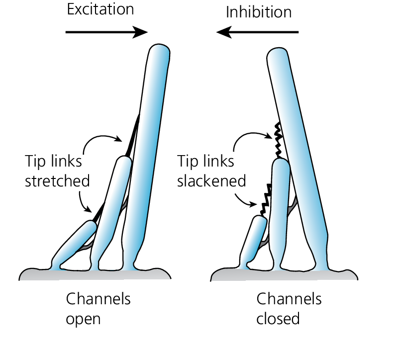
A portion of the force $F$ necessary to displace a hair bundle through a distance $X$ reflects the work done in pulling open channel gates.
If a channel has three states, two closed and one open, then
\[ F = (\boldsymbol{\kappa_S}+\boldsymbol{\kappa_G}) X + C + [p_1(\Delta \boldsymbol{\kappa}X+Nz_{12})-p_3Nz_{23}] \]
Bundle deflection and force are linearly related when the bundle is strongly pulled.
Over a middle range, compliance depends on displacement
Distortion products in force produced by hair bundle
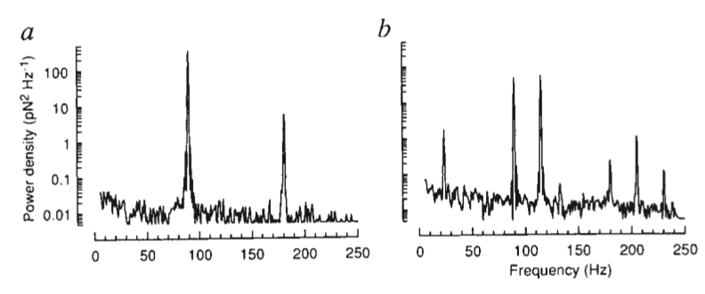
When moved back and forth, a hair bundle produced force at the stimulus frequency and the second harmonic
When a second frequency was added, the bundle produced forces at the difference and sum frequencies ($f_2 - f_1$ and $f_1+f_2$) and at combination frequencies ($2f_1-f_2$ and $2f_2-f_1$).
Distortion products in force produced by hair bundle
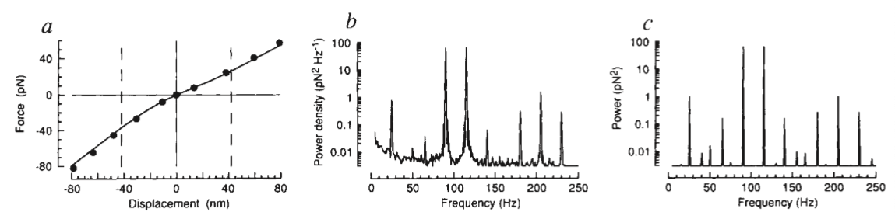
The relation between bundle displacement and force was determined by deflecting a bundle with stimulus pulses and measuring the flexion of the stimulus fiber.
Distortion products in force produced by hair bundle
Stimulation of the hair bundle at 90Hz and 115 Hz elicited distortion products
$f_2 - f_1$ = 25 Hz
$2f_2 - 2f_1$ = 50 Hz
$2f_1 - f_2$ = 65 Hz
$2f_2 - f_1$ = 140 Hz
$2f_1$ = 180 Hz
$f_1 + f_2$ = 205 Hz
$2f_2$ = 230 Hz
Distortion products in force produced by hair bundle
Distortion products of similar frequency and magnitude arose in the power spectrum calculated from the bundle's measured stiffness and gating compliance.
The primary frequencies and stimulus amplitudes in (c) were the same as those in (b).
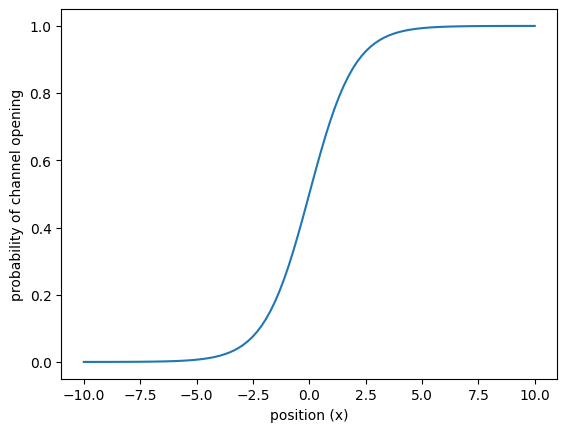
Probability of channel opening vs displacement \[ p = \frac{1}{1+e^{-x}} \]
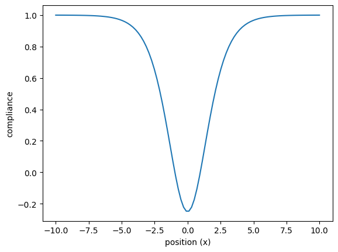
Compliance vs displacement \[ \frac{1}{k} = x - 5p(1-p) \]
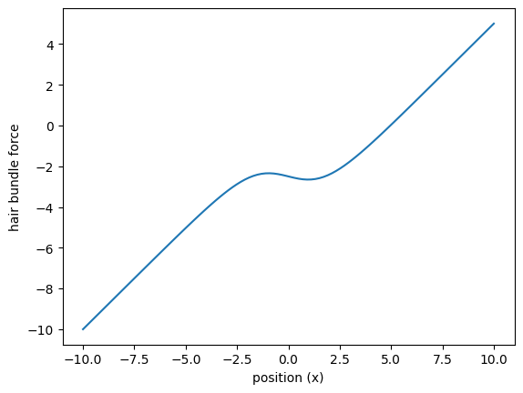
Force vs displacement \[ F = 1 - 5p \]
My python experiment
Drive a hair bundle with sine waves at 500 Hz and 850 Hz
Power spectrum of the force contains distortion products!
Measuring the position of a hair cell using a dual-beam interferometer
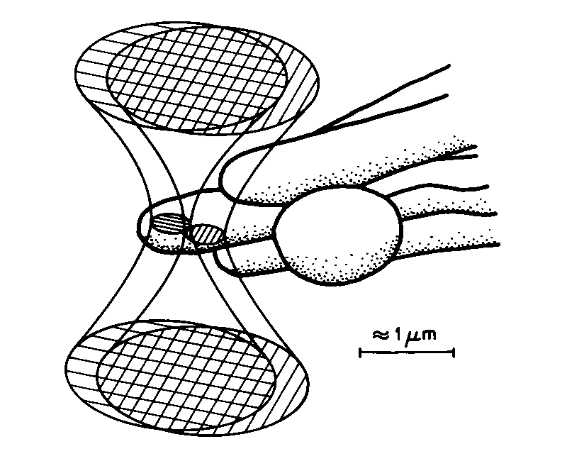
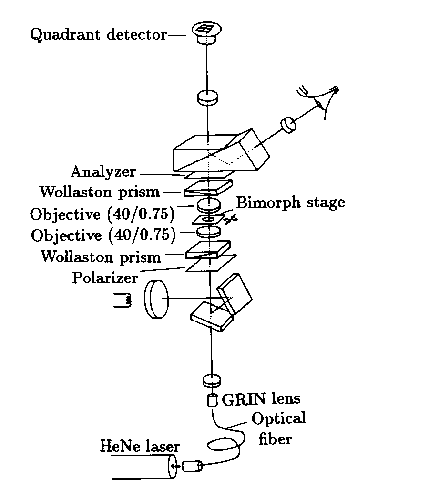
Equipartition allows you to calculate the spring constant from the positional fluctuations: \[ \kappa = \frac{k_B T} { \left< x^2 \right> } \]
Lorentzian power spectrum of hair cell positions
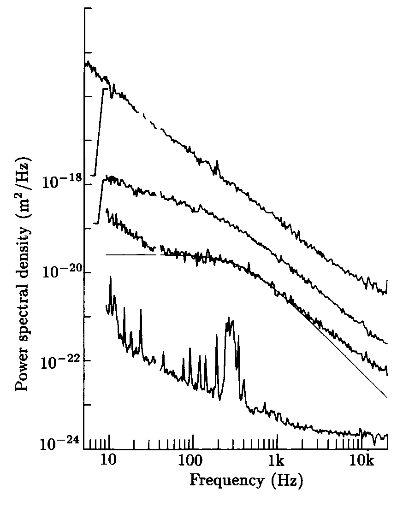
Typical displacement power-spectral densities for (from bottom to top) instrumental noise, a hair bundle with a Lorentzian spectral shape (compare smooth Lorentzian trace), a hair bundle with most common shape, and a cell-cell boundary.
The power spectral density of position fluctuations looks like a Lorentzian centered at zero: \[ \frac{d \left< x_f^2 \right>}{df} = \frac{4k_B T \gamma }{\kappa^2 + (2 \pi f \gamma)^2 } \]
This function is flat for $2 \pi f \ll \kappa/\gamma$ and drops as $f^{-2}$ above roll-off frequency $f_k = \kappa/(2\pi \gamma)$.
By measuring thermally-driven displacements and the roll-off frequency of the Lorentzian, the mechanics of the hair bundle can be inferred.
Hair cell mechanics inferred from hair cell movements
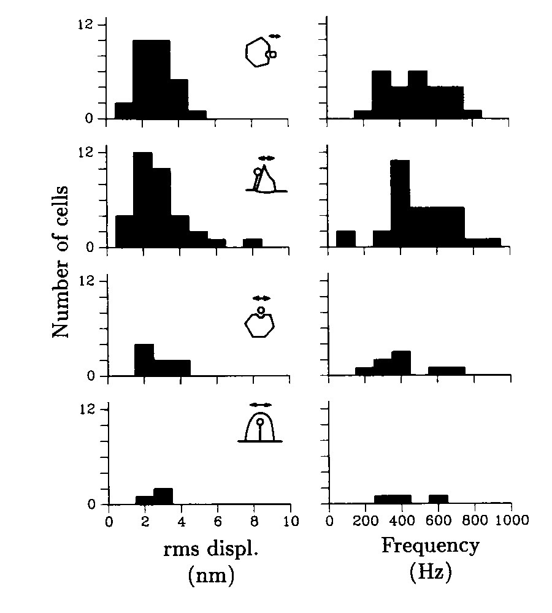
| Relative viscosity (factor) |
Frequency Shift (factor) |
Amplitude (nm) |
| 1 |
1.0 ± 0.2 |
4.0 ± 0.6 |
| 3.5 |
3.5 ± 0.4 |
4.7 ± 0.5 |
| 1 |
1.44 ± 0.1 |
5.4 ± 0.3 |
| 1 |
1.00 ± 0.7 |
2.5 ± 0.3 |
| 3.18 |
3.2 ± 0.3 |
3.8 ± 0.3 |
| 10.1 |
7.4 ± 0.7 |
3.3 ± 0.5 |
| 1 |
1.0 |
2.4 |
| 10.1 |
9.9 ± 0.3 |
2.8 ± 1.0 |
| 1 |
1.34 ± 0.19 |
1.9 ± 0.3 |
Fourier Analysis
The value of the Fourier transform of $x(t)$ at frequency $f$ is:
\[ {\hat {x}}(f)\triangleq \int _{-\infty }^{\infty }e^{-i2\pi ft}x(t)\ dt \]
Parseval's or Plancherel's theorem gives us alternate expressions for the energy of the signal:
\[ \int _{-\infty }^{\infty }|x(t)|^{2}\,dt=\int _{-\infty }^{\infty }|{\hat {x}}(f)|^{2}\ df \]
Can view $|{\hat {x}}_{T}(f)|^{2}$ as the Fourier transformation of the time convolution of the signal as:
\[ |{\hat {x}}_{T}(f)|^{2}={\mathcal {F}}\left\{x_{T}^{*}(-t)\mathbf {*} x_{T}(t)\right\}=\int _{-\infty }^{\infty }\left[\int _{-\infty }^{\infty }x_{T}^{*}(t-\tau )x_{T}(t)dt\right]e^{-i2\pi f\tau }\ d\tau \]
The random forcing term of the Langevin equation
Consider 1-D Brownian movement of a particle with frictional drag coefficient $\gamma$ and mass $m$:
\[ m\dot{v} + \gamma v = \eta(t) \]
Random forcing term:
\[ \left< \eta(t') \eta(t) \right> = \sigma^2 \delta (t-t') \]
What is $\sigma^2$? A solution to this first-order inhomogeneous differential equation will be:
\[ v(t) = e^{-\gamma t / m } \times f(t) \]
Substituting the solution into the original differential equation gives:
\[ v(t) = \frac{e^{-\gamma t/m}}{m} \int_{-\infty}^t \eta(\tau) e^{\gamma \tau /m } d\tau \]
The random forcing term of the Langevin equation, continued
Rearrangement gives:
\[ v(t) = \frac{1}{m} \int_{-\infty}^t \eta(\tau) e^{-\frac{\gamma}{m} (t-\tau)} d\tau \]
Change of variables $t'=t-\tau$:
\[ v(t) = \frac{1}{m} \int_{0}^{\infty} \eta(t-t') e^{-\frac{\gamma}{m} t'} d t' \]
Random forcing of Langevin, continued
Equipartition gives us the value of the mean square velocity:
\[ \left< v^2 \right> = \frac{k_B T}{m} \]
The magnitude of the random forcing term ($\sigma^2$) has to be such that equipartition is satisfied!
\[ v^2(t) = \frac{1}{m^2} \int_{0}^{\infty} \int_{0}^{\infty} \eta(t-t') \eta(t-t'') e^{-\frac{\gamma}{m} (t'+ t'')} d t' dt'' \]
Take the expectation value of $v^2(t)$:
\[ \left< v^2(t) \right> = \frac{1}{m^2} \int_{0}^{\infty} \int_{0}^{\infty} \left< \eta(t-t') \eta(t-t'') \right> e^{-\frac{\gamma}{m} (t'+ t'')} d t' dt'' \]
Random forcing of Langevin, continued
But $\left< \eta(t-t') \eta(t-t'') \right> = \sigma^2 \delta(t'-t'')$ , which greatly simplifies the integral, which has to satisfy equipartition:
\[ \sigma^2 \int_{0}^{\infty} e^{-\frac{2\gamma t'}{m}} d t' = m k_B T\]
We conclude that $\sigma^2 = 2 \gamma k_B T$ and that
\[\left< \eta(t) \eta (t') \right> = 2 \gamma k_B T \delta(t-t')\]
Random forcing of an object in a harmonic potential
Consider an over-damped particle in a harmonic potential well, $E=\kappa x^2 /2$:
\[ \gamma \dot{x} + \kappa x = \eta(t) \]
The Fourier-transform of the equation of motion gives us a direct relationship between the Fourier transform of position and the Fourier transform of the random forcing term:
\[ 2 \pi i \gamma f \tilde{x} (f) + \kappa \tilde{x} (f) = \tilde{\eta}(f) \]
Thus, the power spectral density of positional fluctuations is:
\[ S_x(f) = \frac{4 \gamma k_B T}{(2 \pi f \gamma)^2 + \kappa^2} \]
The need for active resonance
Basilar membrane displacements at the hearing threshold are in the range 0.1 to 1 Å
If the motion of the hair bundle were free and undamped, $kT=\kappa \left< x^2 \right>$.
For a hair bundle, $\kappa \approx 10^{-3}$ N/m, so the root-mean-square thermal displacement is around 2 nm.
The power spectral density of the hair bundle is:
\[ P(f) = \frac{4 \gamma k_B T}{\kappa^2 + 4 \pi^2 f^2 \gamma^2 } \]
What size frequency band (at frequencies below damping) gives rise to displacements on the 1 Å length scale?
\[ 10^{-20} \text{m}^2 = \frac{4 \gamma k_B T}{\kappa^2}\Delta f \text{m}^2/\text{Hz} \]
The need for active resonance
What size frequency band (at frequencies below damping) gives rise to displacements on the 1 Å length scale?
\[ 10^{-20} \text{m}^2 = \frac{4 \gamma k_B T}{\kappa^2}\Delta f \text{m}^2/\text{Hz} \]
For a hair bundle, $\gamma \approx 10^{-7} \text{N}\cdot \text{s}/\text{m}$, $\kappa \approx 10^{-3}$ N/m, and so $\Delta f \approx$ 1 Hz.
Signal detection within a narrow bandwidth is needed such that the stimulus-evoked displacement is larger than the thermally-evoked displacement!
Compressive nonlinearity
Normal form of a dynamical system with a Hopf bifurcation:
\[ \dot{z} = (\mu - i \omega_0) z - \left| z^2 \right| z \]
When $\mu$ becomes positive, the solution $z \equiv 0$ becomes unstable, and a stable oscillatory solution appears
\[ z=\sqrt{\mu}\exp{(i \omega_0 t)} \]
If the system is subjected to periodic forcing, the force balance equation becomes
\[ \dot{z} = (\mu - i \omega_0) z - \left| z^2 \right| z + F e^{i \omega t} \]
Assuming a 1:1 locked form $z=R e^{i \omega t + i \phi}$:
\[ F^2 = R^6 - 2\mu R^4 +\left[ \mu^2 +(\omega - \omega_0)^2 \right] R^2 \]
Compressive nonlinearity
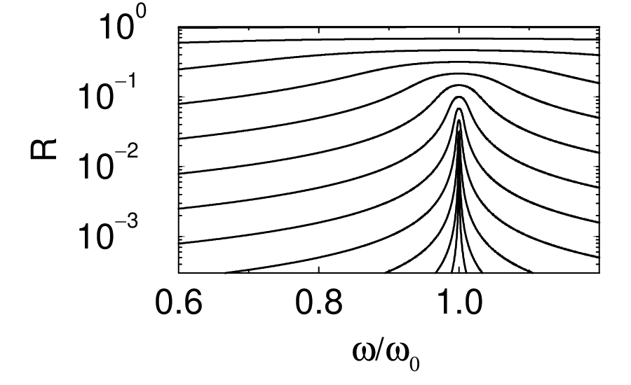
At the center of resonance, where $\omega = \omega_0$, $R \approx F^{1/3}$.
No matter how small $F$ might be, the response is nonlinear.
Integrating the active process of hair cells
We can hear vibrations of the eardrum that are as small as 1 picometer
We hear from 20 Hz to 20kHz, and can distinguish sounds 1/30th of the interval between notes on the piano
We hear amplitudes ranging a trillion-fold in intensity
Normal hearing actively amplifies sound intensities by hundredfold
Active process enhances frequency sensitivity
The normal cochlea can produce otoacoustic emissions because of the positive feedback that produces spontaneous oscillations
The cochlea and organ of Corti
 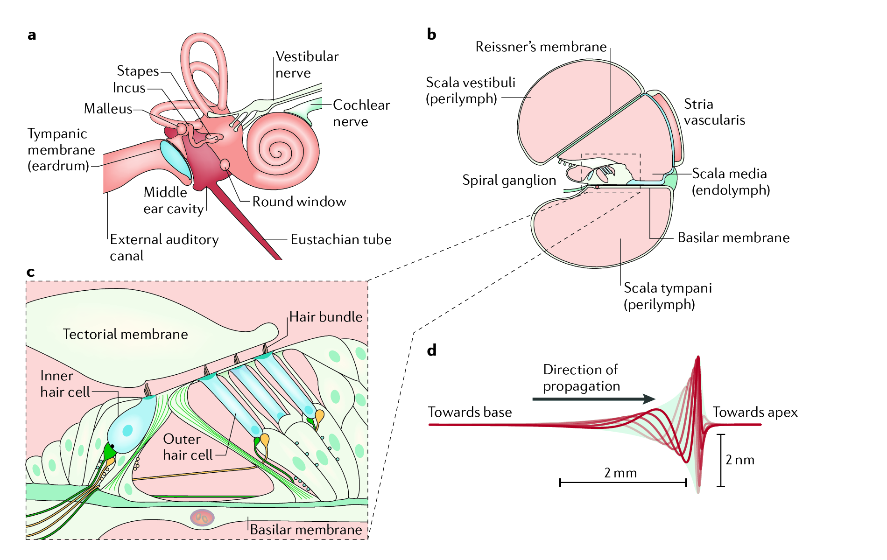
The receptor for sound in the human ear is the organ of Corti, a strip of sensory epithelium running some 33 mm along the spiral cochlea
3,500 inner hair cells are arranged in a single row, forming synapses with afferent nerve terminals.
12,000 outer hair cells mediate the active process. Their principal role is mechanical
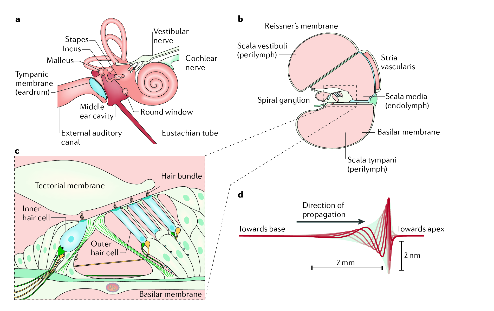
The receptor for sound in the human ear is the organ of Corti, a strip of sensory epithelium running some 33 mm along the spiral cochlea
3,500 inner hair cells are arranged in a single row, forming synapses with afferent nerve terminals.
12,000 outer hair cells mediate the active process. Their principal role is mechanical
The traveling wave
When a mammalian cochlea receives a pure-tone acoustic stimulus, pressure differences between its liquid-filled compartments set the basilar membrane into oscillation at the frequency of stimulation.
As each wave progresses, it grows in amplitude, decreases in wavelength, and then abruptly vanishes
Most of the energy associated with sound of any particular frequency is deposited at a specific position along the basilar membrane, beyond which propagation ceases and the traveling wave collapses
High frequencies (up to 20 kHz) are represented at the cochlear base
Low frequencies, down to 20 Hz, excite the apex.
In the mammalian cochlea, the active process of outer hair cells amplifies the vibration of each increment of the basilar membrane, contributing energy that sustains a traveling wave
Active hair-bundle motility, constitutes the entire active process of amphibians and some reptiles
The hair cell and hair bundle
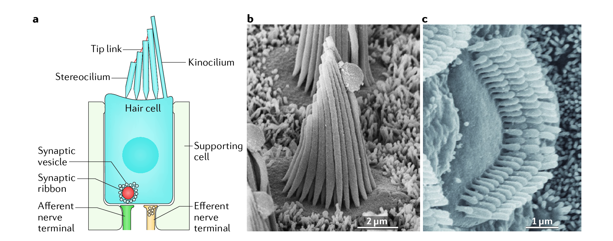
Transduction commences when a stimulus deflects the hair cell's elegant mechanoreceptive organelle, the hair bundle.
The hair bundle transduces a stimulus force into an electrical response, the receptor potential, which is a change in the voltage across the cell's membrane
The receptor potential in turn modulates the release of the neurotransmitter from synapses at the hair cell's base and thus transmits the response to the brain
Gating of transduction channels
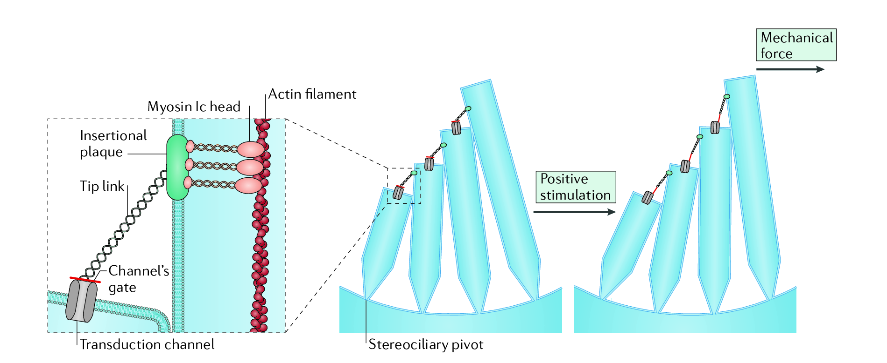
Movement of a hair bundle's top within its plane of bilateral symmetry, as occurs when a bundle is stimulated by sound, causes the largest electrical response
Displacement towards the bundle's tall edge, which is defined as a positive stimulus, opens transduction channels and causes depolarization.
Deflection in the opposite direction closes channels and evokes hyperpolarization.
Channels appear to be asymmetrically located at the links' lower insertions
Gating of transduction channels
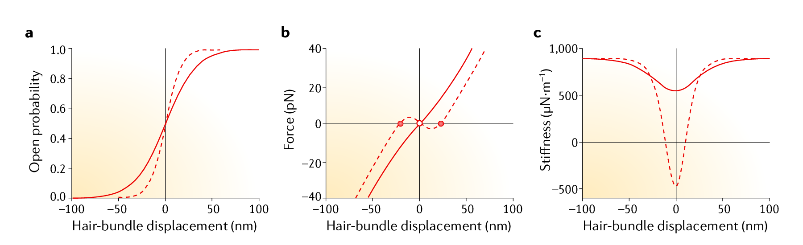
If a hair cell's transduction channels are gated directly by the force applied to the hair bundle, the opening and closing of the channels should reciprocally influence the bundle's mechanical properties.
The demonstration of this decrease in hair-bundle stiffness, termed the gating compliance, provides evidence in support of the gating-spring theory
The gating compliance can become so great that it outweighs the stiffness of a hair bundle's other components, whereupon the bundle's total stiffness becomes negative
a hair bundle displaying negative stiffness does not oppose an applied stimulus force but instead augments the stimulus by contributing additional force in the same direction
a hair bundle cannot reside stably near the region of negative stiffness because a thermal deflection in either direction drives the bundle into a region of positive stiffness
Adaptation
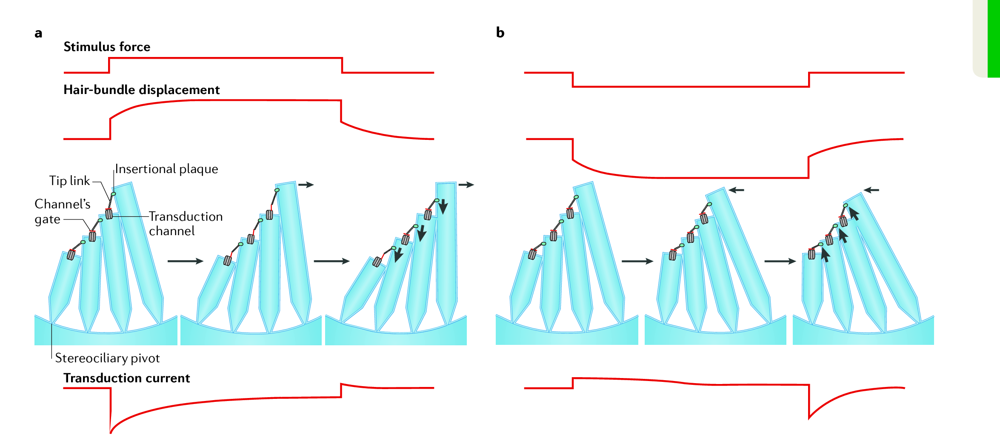
Because auditory transduction does not proceed through a biochemical signalling cascade such as those characteristic of vision, smell and taste, a novel mechanism is required to effect adaptation to sustained stimulation
If a hair bundle is experimentally displaced from its resting position, the locus of mechanical sensitivity migrates towards its new position with a time constant of a few tens of milliseconds
When responding to a positive force, a bundle initially moves a distance that is inversely proportional to its stiffness, but then the bundle sags farther in the same direction.
Limit-cycle oscillation
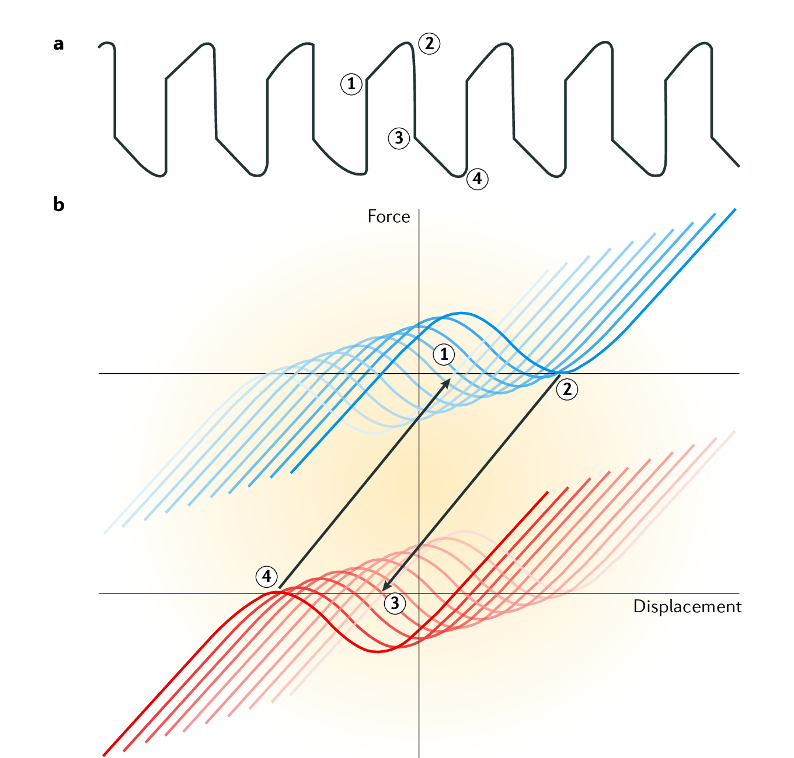
the hair bundles of many species exhibit spontaneous movements that reflect their capacity to participate in the active process
Spontaneous hair-bundle oscillations emerge from the combination of negative hair-bundle stiffness and adaptation.
Suppose that such a bundle starts with a small open probability for its transduction channels
Acting through the ascent of tip link motors, adaptation begins to increase the open probability towards the steady-state set point
This progressively shifts the displace- ment–force relation to the left and downwards.
the region of positive slope vanishes abruptly and the hair bundle must leap to a new fixed point on the curve's opposite limb
the open probability is high, so the tip link insertions begin to descend
When mechanical stability again vanishes, the hair bundle jerks back in the negative direction.
Hopf bifurcations
Normal form of a dynamical system with a Hopf bifurcation:
\[ \dot{z} = (\mu - i \omega_0) z - \left| z^2 \right| z \]
Limit-cycle oscillations when $\mu > 0$, stable fixed point at $x=0, y=0$ when $\mu < 0$